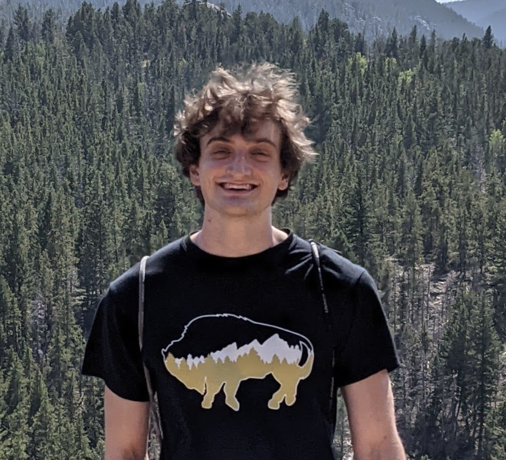

Freddy Linn's Class Portal Page
About Me
Hi! I'm Freddy. I'm a junior in computer science at CU Boulder. I enjoy all kinds of programming, but have mainly focused on web development. This makes me excited to learn universal design so that I can make my websites more accessible and a better experience for everyone that uses them. I am also part of a web development club here at CU called Blueprint Boulder so I hope to apply this knowledge towards all of our annual projects as well as the club website. Outside of classes, I enjoy climbing, skiing, surfing, and anything else outdoors.
